During my internship on a technology consulting team, I was tasked with finding the best way to transition the team away from Jira, whose license was set to expire in a month. I needed to evaluate whether an existing platform or a newly developed solution would best meet the team’s needs.
The challenge was to find a solution that integrated well with the team’s established day-to-day workflows while preserving years of Jira history.
Requirements
Support internal use by a team of up to 20 people.
Provide core issue-management features tailored to the team’s workflows.
Offer a simple, intuitive user interface.
Preserve all existing Jira tickets, including activity logs, comments, and attachments.
Constraints
Complete design, development, and migration within four weeks.
Keep development, hosting, and maintenance costs low.
Options I weighed
I decided to build a custom internal tool rather than adopt another off-the-shelf solution. With AI-assisted development, building and deploying a tailored platform within a tight deadline became feasible. It also offered two key advantages: eliminating licensing costs and designing the experience around the team’s existing workflows.
Design, development, and data migration must be completed under a tight deadline
Requires ongoing maintenance and support
Tech stack
Layer
Stack
App
Next.js
Database
Supabase
Hosting
Vercel
UI design
Subframe
I picked a stack that a team this size can run for $0. I chose Supabase over Neon and a self-hosted server because it bundles the database with file storage, and attachments were the team's most-used feature. Its free tier (500 MB database, 1 GB of files) fits a 20-person team, with a $25/month upgrade if files outgrow it. A self-hosted server would offer more control over security and costs little, but it would need to go through a lengthy internal approval process, and someone would have to patch, secure and back it up. Vercel was the natural choice for Next.js: every push deploys automatically, with no server to maintain.
Process
I walked through the team's workflow with the project manager and narrowed it to three core jobs, then defined the leanest v1 version of each.
Job
What the team needs
Lean first version
Create a ticket
Report an issue and describe it
A form with title, description and submit
Assign it
Link a ticket to a specific team member
Assignee and reporter fields
Track status
See progress and how work is spread across people
A list view of all tickets
Data migration
I moved 556 tickets, 85 comments and 234 attachments from a Jira XML export into a schema I designed in Supabase.
Export the team's Jira project as XML.
Design the schema: users, tickets (with parent links for epics and sub-tasks), comments, attachments, issue links and an activity log.
Transform and load: parse the XML, map each Jira field and user to the new structure, and upload attachments to storage.
Check: confirm counts and spot-check tickets against Jira.
Data schema
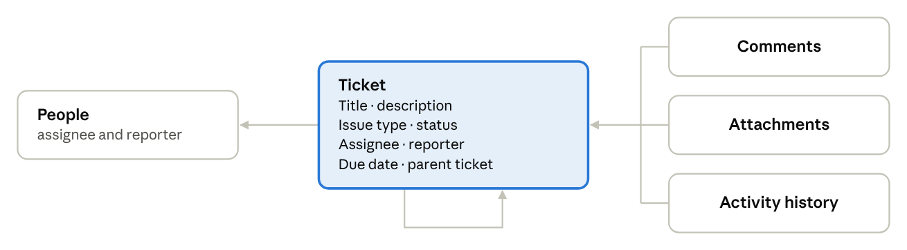
Each ticket stores its core fields, links to the people working on it, and keeps its comments, attachments and history alongside. Stories, Bugs and Sub-tasks point to their parent ticket, following Jira's issue hierarchy.
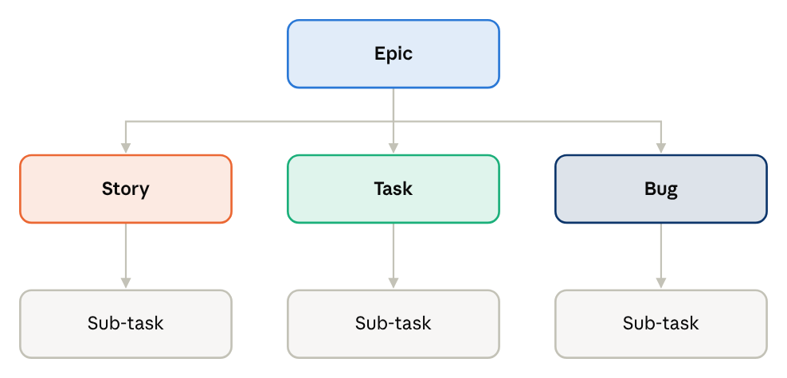
Issue hierarchy, following Jira's
Design
I designed the screens in Subframe so they would feel familiar to Jira users while showing far less at once.
Familiar structure: the same issue hierarchy (epics, stories, tasks, sub-tasks, bugs) and statuses the team already knew, so nobody had to relearn their workflow.
Less on screen: one page per job, and only the eight core fields on a ticket.
Designed, then built: I iterated on layouts in Subframe and built against the same components, so the shipped screens match the designs.
v1 screens
Click a screen to see it full size
Growing it from feedback
After launch, I watched how people used JiraLite and added eight features, each in response to something the team kept doing or asking for.
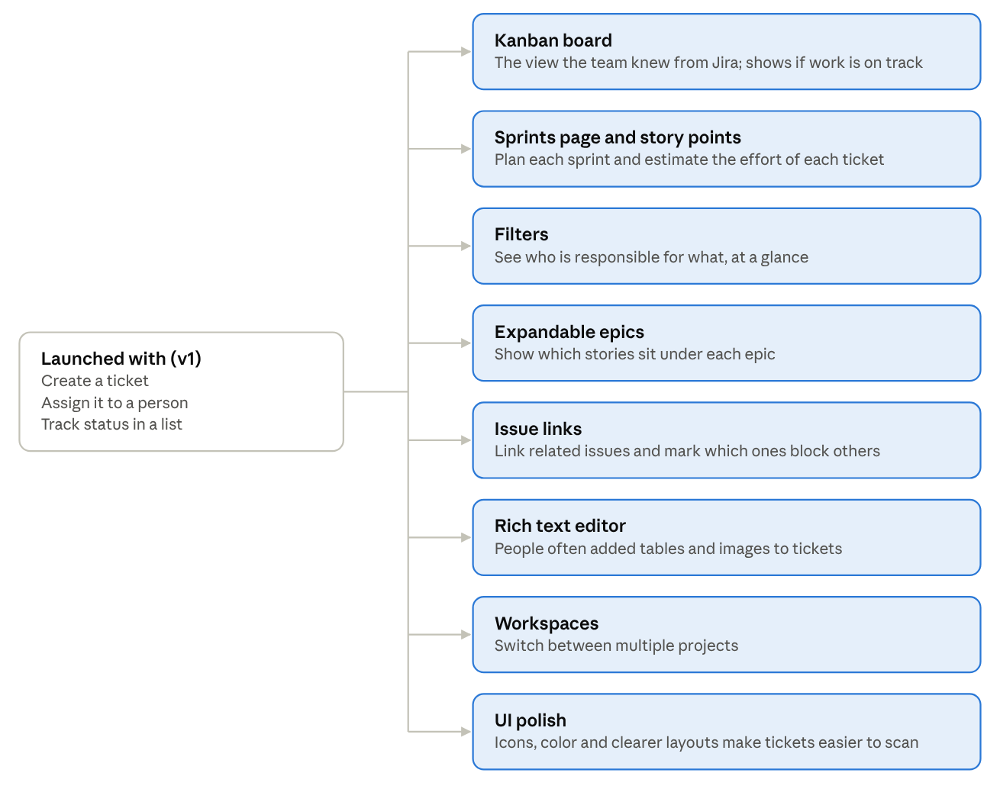
v1 at launch → 8 features added from feedback
Each addition answered a pattern in how the team used the tool, so the product grew customized to the team's needs rather than following a generic feature list.
Final pages
List view: all tickets, filterable by any field, so the project manager can see who is responsible for what
Ticket detail: every field visible and editable, including status
Kanban board: the view the team already relied on in Jira, and the clearest way to see at a glance whether work is on track
User page: log in and log out
Outcome
JiraLite replaced Jira within the four-week window, with the full ticket history carried over and $0 in hosting costs.
Easier than the alternative: the project manager found JiraLite easier to use than Azure DevOps, the off-the-shelf option the team had considered.
Handed over: the team now owns and runs it.
Developer
File Watcher
File Watcher catches late, missing, stuck and duplicate files across a client's file sources and alerts the right person, built entirely inside Microsoft D365, with no servers to host.
The problem
The client's systems exchange data through many API and SFTP integrations, but nothing checked them centrally, so file errors went unnoticed until someone looked.
A file could arrive late, never arrive, get stuck mid-upload or arrive twice. The team only found out by checking manually, or when a downstream process broke. That created daily operational friction and risk.
The solution
We built a file watcher service that monitors every file feed, decides when something is wrong, and tells the owner right away, so problems surface before they cause damage. It runs entirely on D365 and Power Platform, so there is nothing extra to host, buy or maintain, assuming a Microsoft license is already in place. File Watcher is installed in the Dataverse database that comes with D365 Finance & Operations, and a one-command install script sets up all the tables and the engine.
Where File Watcher runs inside D365
I built File Watcher with my project manager, Promprit Snitwongse. I was responsible for designing and building the data layer, covering how connections, feed settings, file status and history are stored, and proved it with integration tests and a demo. Promprit led the detection rules, API monitoring, and the rollout tooling.
How it works
Every few minutes, a scheduled flow checks each file source (SFTP, Azure Blob, SharePoint and network folders) and reads only the file details: name, size and timestamps. It never opens or moves the files themselves, so it can’t damage the client’s data.
Those details go to the engine, which decides what state each file is in: detected, stable, stuck or a duplicate. When something is wrong, the owner of that feed gets a single Teams or email alert per problem, and every status change is saved to a dashboard with the file’s full history.
A separate deadline check catches files that never arrive, since a missing file can't be seen by watching folders.
Core features
Feature
What it does for the team
Missing by deadline
Each feed has an expected arrival time, such as 08:00 daily. If nothing arrives, it flags the feed as missing
Stuck files
Flags a file that keeps changing past a time limit, such as an upload that never finishes
Duplicates
Flags a file that shows up again after it was already processed
API monitoring
API integrations report each message as received, processed or failed; it flags failures, timeouts and feeds that go silent
Full audit trail
Every status change is recorded, so the team can trace exactly what happened to any file
Integrating with D365
The core service is complete. What remains is connecting it to the D365 platform, which is point-and-click work in Power Platform. Scheduled checks will watch SFTP, Azure Blob, SharePoint and network folders, reading only file details. When something goes wrong, the owner gets one Teams or email alert per problem, so nobody gets spammed. A monitoring dashboard will show stuck files, missed deadlines and duplicates with each file's full history, and when a new file delivery needs monitoring, operations staff can set it up themselves through a simple form (folder, file pattern, deadline and owner), without needing a developer.
Undergrad researcher · UX/UI · Prompt engineer
MedSimAI
From Spring 2023 to Spring 2025, I was an undergraduate researcher in the MedSimAI lab at Cornell, working on feature design, UX and user research. MedSimAI is an AI-powered standardized-patient simulation platform used by 100+ medical educators and students at Cornell, Yale and UCSF. I designed the Performance Replay feature, the Self-Reflection interface and an SRL Dashboard, shaped the overall user experience, and interviewed medical educators and students to keep the platform aligned with real teaching practices and student needs.
The core idea: self-regulated learning
Self-regulated learning (SRL) is the idea that students improve most when they take charge of their own learning cycle: review how they performed, reflect on what to change, and set goals they track over time, without waiting for a faculty debrief. Every feature I designed supports one part of that cycle:
Performance Replay helps students review exactly what happened in an encounter
Self-Reflection prompts them to reflect on it in their own words
SRL Dashboard lets them set goals and track progress across encounters
Publication
I contributed to a published study, What Medical Students Need from Simulation: Insights to Guide Scalable Learning Design (ACM Learning@Scale, 2025). My role was to facilitate interviews with medical students and clinical coaches, analyze the interview transcripts, and synthesize the findings into insights that shaped future UX/UI design on the platform. Here’s a summary of the five needs that came up most often:
What they needed
What it meant for the design
Evidence-linked comments
Every piece of feedback points to the exact moment in the conversation
Competency mapping
Feedback is tagged to frameworks faculty already teach with (Kalamazoo, MIRS)
Balanced feedback
Strengths shown alongside areas to improve
Concrete next steps
Each comment comes with a suggestion the student can try next time
Low cognitive load
Students can focus on one skill at a time instead of reading everything at once
Jadon Geathers, Yann Hicke, Naphasjutha Kongsonthana, Justin Sewell, Anyanate Gwendolyne Jack, Dennis Shung, MacKenzi Preston, Susannah Cornes, René F. Kizilcec. What Medical Students Need from Simulation: Insights to Guide Scalable Learning Design. ACM (Association for Computing Machinery), July 2025. DOI: 10.1145/3698205.3733954
Feature 1: Performance Replay
The problem
In MedSimAI, medical students practise patient interviews with an AI standardized patient, then get feedback on how they did. But in clinical skills training, feedback is often generic, delayed and hard to act on. A score or a paragraph of comments tells a student how the encounter went overall, not where in the conversation it went wrong or what to try next time.
What I designed
Performance Replay turns the encounter transcript into an annotated record students can step back through. Instead of reading a summary, they see feedback attached to what they actually said.
Transcript annotation interface design
Conversation timeline with performance indicators, so students see at a glance where the encounter went well and where it slipped
Quote-linked feedback: clicking a moment opens the annotation for that exact line, time-stamped
Filters by skill and by strengths or weaknesses
Competency tags mapped to Kalamazoo and MIRS (for example, "Encouragement of questions" or "Negotiates priorities & sets agenda")
Actionable suggestions: each annotation explains what was missed, then gives example wording the student could use next time
An annotation flagged "Need improvement": what was missed in setting the agenda, the competency tags on the student's line, and a suggested way to phrase it next time.
The prompt pipeline
On the technical side, I designed the prompt processing pipeline behind the annotations. I worked with the LLM, fine-tuned prompts and designed task-specific metrics to evaluate the responses it generated. The main challenge was how well the LLM could map the transcript to the right competencies, grade each moment and write actionable feedback.
Results
We evaluated Performance Replay with a 14-item survey on a 5-point scale. The clinician found it easy to identify feedback tied to specific transcript moments, valued the actionable suggestions for both strengths and weaknesses, and noted it helped them review performance more objectively.
Area
Score
Clarity & structure
4.67 / 5
Usability & UX
5 / 5
Usefulness & adoption
5 / 5
Overall
4.89 / 5
Recognition
Our abstract, Bridging Feedback Delivery Gaps in Clinical Skills Training: An Annotated Performance Replay Approach, was accepted as a poster at the DOCS meeting in San Antonio on Saturday, November 1, 2025. I'm first author, with collaborators from Cornell, Weill Cornell, Yale and UCSF.
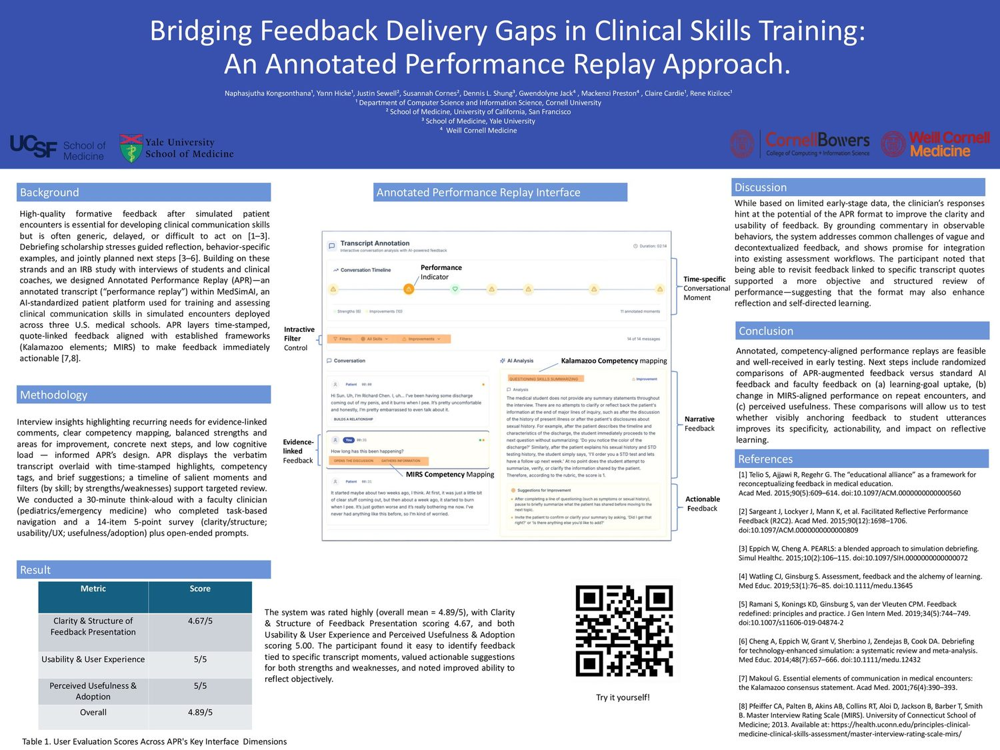
Poster presented at DOCS 2025, San Antonio.
Feature 2: Self-Reflection
The Self-Reflection page asks students to pause after an encounter session, rate their own performance and write down what went well and what they would change.
Reflection card design
Here’s how it fits into the platform flow. While students wait for the results of their encounter, they are prompted to reflect on their notes. We explain the benefits of reflection and ask students for both a quantitative and a qualitative reflection on their performance.
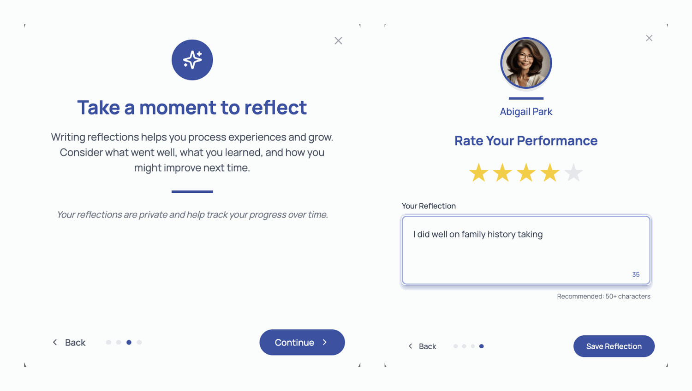
Final version, as implemented on the MedSimAI website: a reflection prompt, then rating and reflection with the patient the student just saw.
Giving reflection its own focused space, one task per screen, matched the low cognitive load need from the interviews.
Feature 3: SRL Dashboard
Replay and reflection work encounter by encounter. The SRL Dashboard connects them over time, giving students one place to plan, track and look back, which are the core habits of self-regulated learning.
Goals: students set their own goals and tick them off
Progress: a 30-day progress ring and their latest encounter score
History: total encounters and links back to past cases
Planning: upcoming appointments and a to-do list
Early SRL Dashboard design: appointments, to-dos, 30-day progress, goals and encounter history in one view.
Hackathon · Prototype
Alphavet
Alphavet is a preventive-care tool that aims to raise pet owners' compliance with their vet's prescription. It helps owners understand what was said in the exam room and follow through at home, so fewer pets come back sicker than they left. The team of five built it in a weekend at the Cornell Animal Health Hackathon in February 2026, bringing backgrounds in public administration, veterinary medicine, biomedical engineering and computer science. I built a responsive prototype, turning insights from interviews with the veterinary students on our team and the vet judges into features.
Demo
The problem
A vet visit only works if the owner follows the advice afterwards, and most don't. In one study, 96% of cat owners couldn't recall their vet's warning about an antimicrobial medication [3], and 38% of dog owners couldn't recall their flea and tick prevention recommendations [4]. More than a million pets in the U.S. have heartworm, yet about half of owners skip prevention. Owners themselves feel the gap: 20% say vet communication could be better [1], and over half of cat owners don't feel properly taught how to give their pet medicine [2].
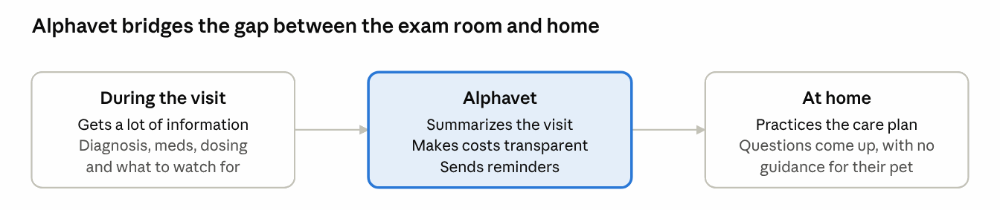
Our idea was to give owners a companion for after the visit: one that summarizes what the vet said in plain language, makes the visit more transparent by showing the treatment plan and its cost up front, and sends reminders so owners stay on track at home.
The solution
We framed compliance as three steps: the owner has to understand the recommendation, accept the plan, and follow through at home.
Alphavet follows the owner from the exam room to home. The visit is recorded, then turned into a summary, a plan and a set of reminders, all tied to the pet's health profile.
The R-A-F framework
Core features
Record a visit
The owner picks their vet and the visit date, tests the microphone and starts recording. A consent notice makes clear that both sides must agree first.
Visit history and plain-language summaries
Every visit is saved in one timeline, tagged by outcome, such as a positive test, a follow-up or a resolved issue. Opening a visit shows a quick summary of why the pet came in and what the vet found, the medication with dose and schedule, and a short how-to video on giving the medicine.
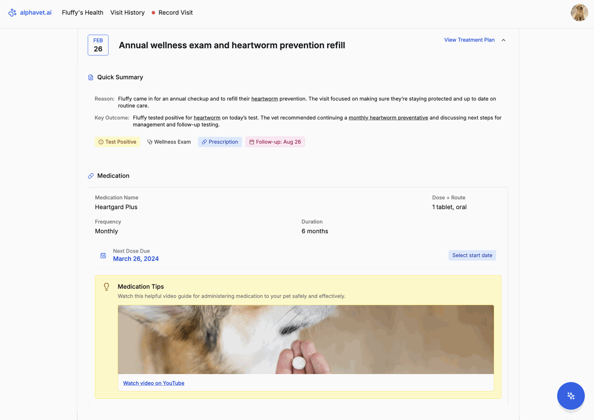
Treatment plan with a price estimate
The treatment plan breaks the vet's advice into what's wrong, what's being done and when to come back, followed by a checklist of medications and home care. A price estimate shows the expected range for each part of the treatment, so the owner knows the total before agreeing to it.
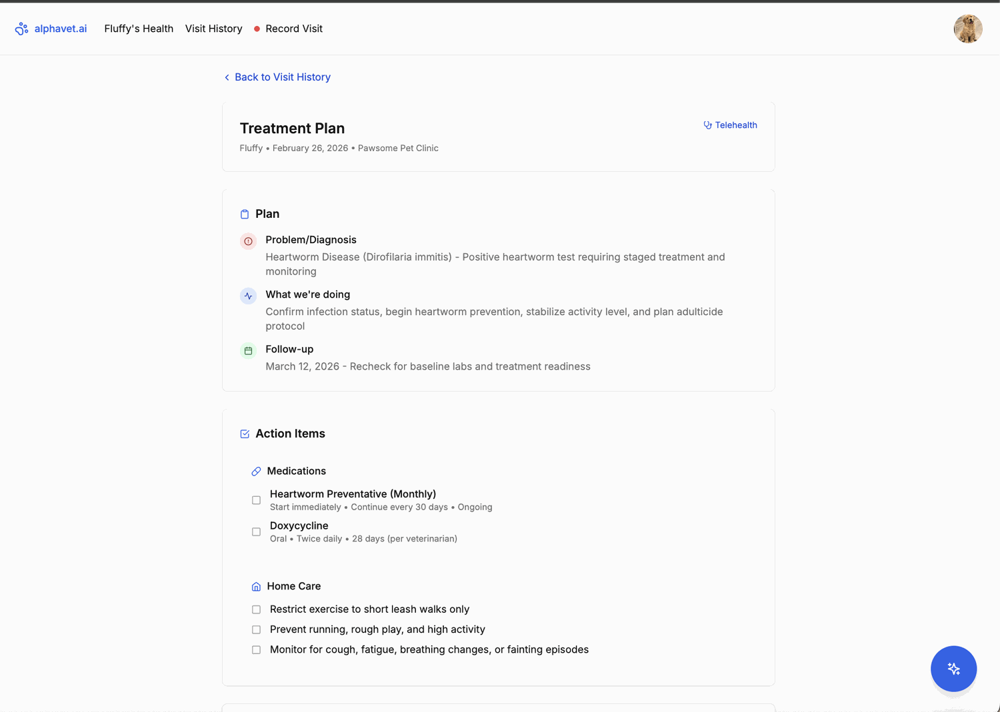
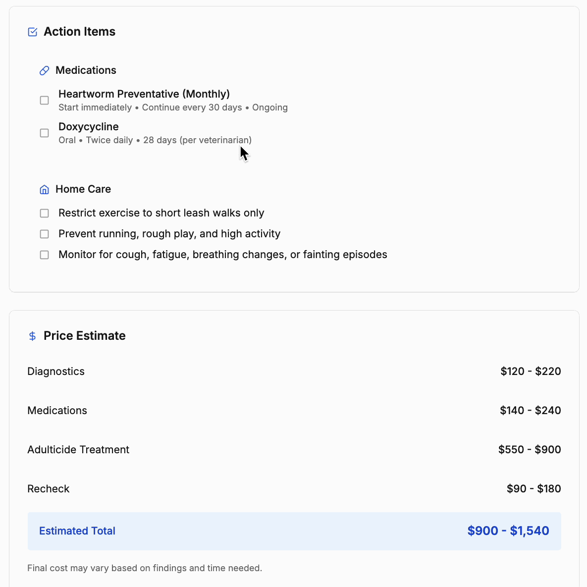
Reminders that keep owners on track
Owners choose how they want to be reminded, by text or email, and how often, for example before every dose. This is the follow-through step, where most compliance is lost.
One health profile for the pet
The profile brings it all together: the next visit with an add-to-calendar button, upcoming medication with a buy button, the most recent visit in plain language, active medications, diagnoses, allergies and biometrics. A floating AI assistant on every page lets owners ask follow-up questions, such as what to do after missing a dose.
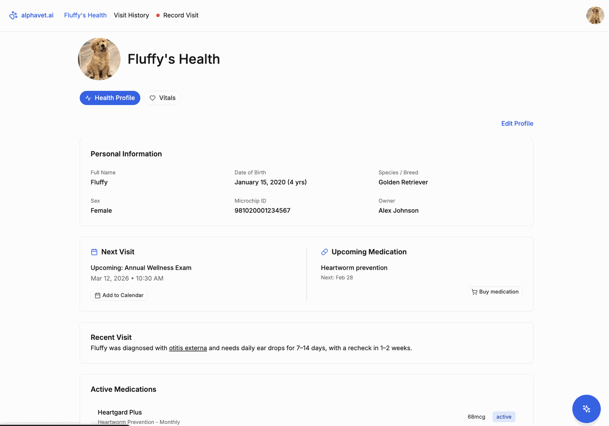
How I built it
I designed the screens in Subframe, then built them into a working React and TypeScript app, all within the hackathon weekend. I worked closely with the two veterinary students on my team and interviewed the vets who were judging to gather requirements, then designed and iterated based on their feedback.
Where it fits
Alphavet reaches owners through vet practices, with roughly 34,000 in the U.S., rather than having to win pet owners one by one. The team's business model combined native, in-app placements with partnerships such as telehealth and pet food brands, and data licensing for research and market insights.
Next steps
We also saw integration potential with pet wearables, which could move Alphavet toward early detection and health monitoring.
References
Piazza, C., Dominguez Cots, L., & Dye, C. (2025). Assessing pet owners' knowledge and comprehension of veterinary medical terminology. The Veterinary Record, 196(9), e5163. doi.org/10.1002/vetr.5163
Taylor, S., Caney, S., Bessant, C., & Gunn-Moore, D. (2022). Online survey of owners' experiences of medicating their cats at home. Journal of Feline Medicine and Surgery, 24(12), 1283–1293. doi.org/10.1177/1098612X221083752
Cazer, C. L., Lawless, J. W., Frye, A., Gonzalez, L., & Safi, A. G. (2023). Divergent veterinarian and cat owner perspectives are barriers to reducing the use of cefovecin in cats. Journal of the American Veterinary Medical Association, 261(12), 1810–1819. doi.org/10.2460/javma.23.08.0487
Lavan, R. P., Tunceli, K., Zhang, D., Normile, D., & Armstrong, R. (2017). Assessment of dog owner adherence to veterinarians' flea and tick prevention recommendations in the United States using a cross-sectional survey. Parasites & Vectors, 10(1), 284. doi.org/10.1186/s13071-017-2217-2
IoT · Software
Robots That Ride Elevators Autonomously
In Summer 2025, as a research intern at the National University of Singapore (SERIUS program), I worked with an IoT consultancy on a middleware system that lets autonomous robots call and ride elevators in multi-floor buildings. In a three-person team, I owned the software and communication layer: firmware microcontrollers, a long-range radio link between the robot and the elevator, the web interface for users, and the integration plan.
The problem
Delivery robots are already transporting parcels, groceries, and food, but most are limited to operating on a single floor. To move between floors, they need to use the building’s elevators, which introduces a major bottleneck.
Existing solutions typically require modifying the elevator’s control system or connecting to the building’s Wi-Fi network (e.g., Schindler Singapore’s Robot Service Connection). Both approaches can be costly and time-consuming to implement, while making the robot dependent on each building’s infrastructure.
The goal was to develop a self-contained add-on that allows robots to operate elevators independently, without modifying the elevator’s existing systems or relying on the building’s network.
What I built
The system has three parts that talk to each other: a web interface where a user sends the robot to a floor, a microcontroller on the robot, and a microcontroller at the elevator panel. I wrote the software for all three. I wrote C++ on the microcontrollers and HTML/JavaScript for the web interface.
System overview
The journey
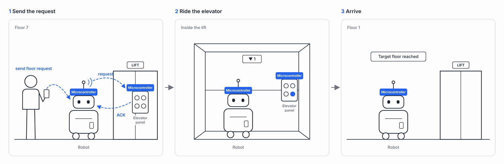
User journey
Why two links? The user sends the floor request to the robot from wherever they are, such as their room or office, without having to walk to the elevator. The robot then makes its own way to the elevator and calls it from there. The robot needs to be right at the elevator to call it, so the elevator arrives when the robot is ready to board.
Microcontroller software
A small microcontroller is added to both the robot and the elevator panel, so neither has to be modified.
On the robot: runs its own local network and web app, takes the user's request, and tracks each stage of the trip so the user always sees the right status
On the elevator panel: listens for requests, ignores repeats, and confirms each one it receives
Communication with retries
Regular wireless signals struggle to get in and out of a metal elevator car, so the two devices talk over a long-range radio link with a simple confirm-and-retry protocol:
The robot sends a numbered floor request
The panel confirms it by sending the same number back (ACK)
No confirmation in time? The robot sends it again, up to a set limit
The number lets the panel spot repeats, so one request never becomes two elevator calls
If it still fails, the user is told and the robot resets for a new request
Web interface
Opens on any phone or laptop with nothing to install. The user picks where the robot is and where it should go, then watches the status update as the trip progresses.
Results
We tested the system in a seven-floor building on campus, sending requests between the robot and the elevator across gaps of one to six floors, with people using the elevator as normal.
100% of the requests got through and were confirmed
Less than one retry needed on average
No changes to the elevator and no reliance on the building's WiFi
Reflections and next steps
This project proved that long-range radio communication can reliably get through a metal elevator car, which blocks most wireless signals like a Faraday cage, and that it can be done cheaply, for $75 or less in hardware, without touching the elevator or the building's network. That opens it up beyond delivery robots: the same low-cost link could support indoor asset tracking, emergency alerts from inside elevators, or other robots and smart-building devices that need to talk across floors. The next step is to integrate the communication layer with the rest of the robot and pilot the whole journey in a real-world setting with real traffic, from a user's floor request to the robot arriving on the target floor, to see how it holds up in day-to-day building use.
This was part of my capstone project, built by a team of five. I led the team’s data visualization and insight generation. We worked from national salary and employment data by major, covering 1993 to 2015, from the National Science Foundation’s National Survey of College Graduates.
Population & problem
Every year, students choose a college major without knowing what career opportunities or earning potential it will actually lead to. For many, it’s one of the biggest financial decisions they’ll make, especially when balancing income potential against job stability. Yet most students rely on average salary rankings, which show how much graduates earn but hide the uncertainty and variation behind those averages.
We wanted to shift the question from “Which major pays the most?” to “Which major best aligns with my priorities, whether that’s maximizing income, minimizing risk, or finding a balance between the two?”
The system
A student chooses a major, and uncertainty enters through the labour market: salary and employment outcomes are not guaranteed. Our model steps in before the choice, taking the student's risk preference as input and returning a ranked recommendation.
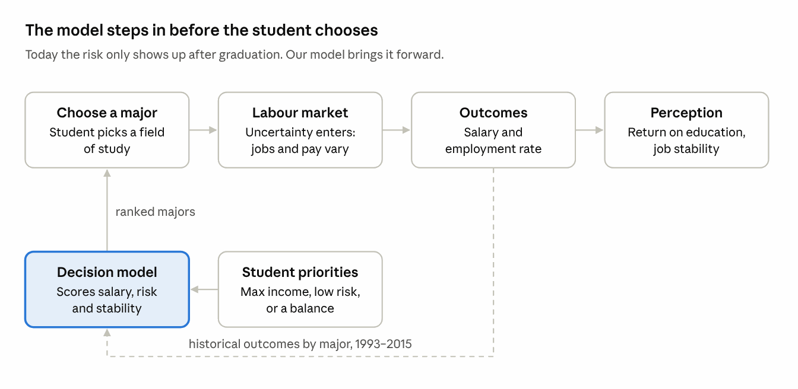
System map
Decision & constraints
The decision is simple: which college major should a student choose? The challenge is that each major comes with a different range of possible career outcomes. Some offer higher expected salaries but carry greater downside risk, while others provide more stable employment outcomes at the cost of lower earning potential.
We framed this as an optimization problem: maximize expected salary conditional on employment, while accounting for the risk of lower job security and unfavorable salary outcomes.
Several limitations to note: the model assumes a four-year undergraduate degree with no graduate education, does not account for individual academic ability or preparation, and relies on historical national-level data rather than accounting for differences across geographic regions or institutions.
How the analysis works
Our model looks at the range of possible career outcomes. It evaluates each major across three factors: earning potential, job security, and downside protection (the risk of earning below the average salary).
We combine these factors into a weighted ranking, then adjust the weights for different risk profiles. This allows us to see how major recommendations change depending on whether a student prioritizes higher earnings, stability, or a balance of both.
Key insights
Salary as a Quick Elimination Tool
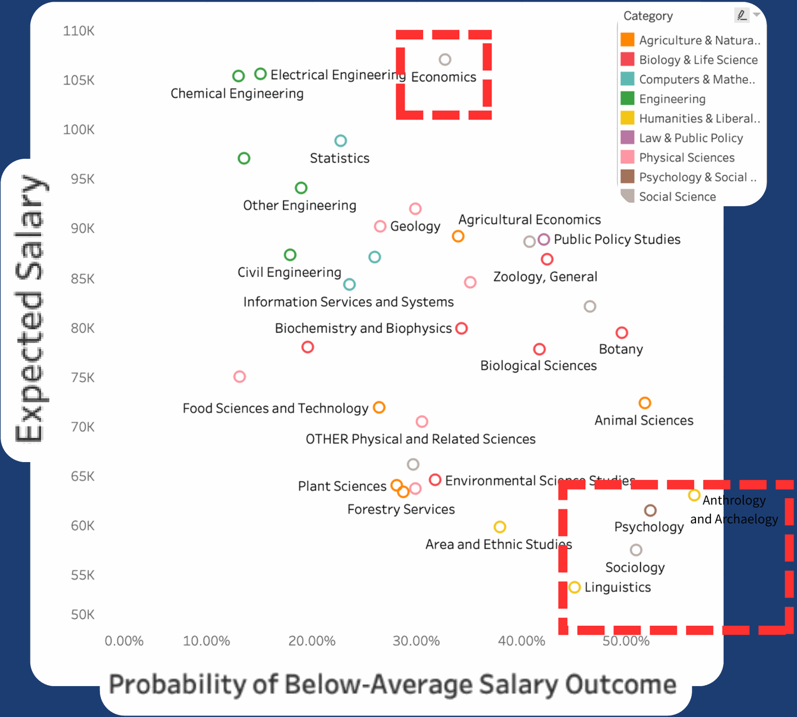
First, I looked at salary alone as a quick way to narrow down the options. I plotted each major’s expected salary against its probability of falling below the average salary in the simulation.
Some majors clearly stood out in the lower-right corner: they had both lower expected salaries and higher downside risk. Sociology, Linguistics, Psychology, and Anthropology all had over 45% downside risk, making them less attractive for students prioritizing financial outcomes.
Ideally, we’d want majors in the top-left corner: high expected salary with low downside risk. But very few majors fall into that category. In fact, higher salaries often come with greater uncertainty. This leads to the next question: does a high salary mean a better major? Not always.
High Salary Doesn’t Always Mean Low Risk
Economics is a good example. It has the highest expected salary, but also a relatively high chance of earning below average. So while it may be attractive to students looking to maximize income, that potential comes with a trade-off: greater uncertainty. This is exactly why we built a decision model rather than simply ranking majors by salary. The best choice depends on whether a student prioritizes maximum earnings or a balance between income and stability.
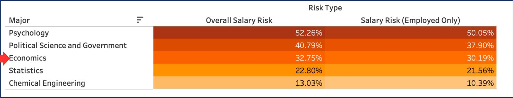
Weighted-Balance Rankings
Once I account for salary, downside risk, and employment outcomes together, Engineering majors dominate the top five in our weighted-balance rankings.
Chemical Engineering comes out on top, offering a strong combination of high expected salary, low downside risk, and high employment rates. It is followed by Atmospheric Sciences, Mechanical Engineering, and Electrical Engineering.
At the other end, majors like Anthropology and Archaeology, Psychology, and International Relations rank lower because they combine weaker salary outcomes with higher downside risk and lower employment stability. This doesn’t make them bad choices, but it highlights the financial trade-offs students should consider.
The best major depends on the profile.
There is no single best major for every student. The right choice depends on their priorities.
For students looking for the strongest overall balance, I recommend Chemical Engineering. For those focused on maximizing salary and willing to accept more uncertainty, Economics is a better fit. And for students who prioritize employment security, Atmospheric Sciences offers a stronger option.
Recommendation
Profile
Choose
Why
Risk-averse
Engineering
Low downside risk, stable outcomes
Risk-neutral
Chemical Engineering
Best overall balance
Risk-seeking
Economics
Highest upside, more volatility
Ultimately, our recommendation isn’t simply to choose the highest-paying major. It’s to choose the major that best matches each student’s trade-off between salary, risk, and stability.
Limitations & equity
The model is only as good as its data, which is historical (1993–2015) and doesn't break down by region or university. It also assumes every student can access every major, when in reality access to high-return majors depends on academic preparation and resources. Outcomes in fields like economics depend heavily on networking and the prestige of a student's institution, which the model can't capture. Finally, ranking majors by financial return risks reinforcing inequality and undervaluing fields whose value isn't measured in salary, so the model is best used as one input into a student's decision, not the whole answer.
Data analysis
Takeaway, Dine-In or Both? A Café Under Rent Pressure
This is a personal data project built on a public Kaggle café sales dataset of 10,000 transactions. I cleaned the data in Excel, visualized it in Power BI, and pulled out insights for a café weighing its options under rising rent.
Population & problem
High rent has become a major threat to the survival of many cafés and restaurants, even those with strong customer traffic and sales [1]. As rents rise faster than margins, some operators respond by shrinking their stores and focusing more on delivery and takeout [2], while others close their dining rooms entirely and become ghost kitchens serving only off-premise orders [3]. For a café owner in that position, the question is whether to go takeaway-only, keep the dine-in space, or run both. Cutting space clearly saves rent, but without data it's hard to know which sales would disappear along with the tables. Using a café sales dataset [4], I set out to find which operating model is most financially sustainable under high rent pressure.
The system
Customers buy either in-store or takeaway, and each choice brings in a different kind of order. Rent is tied to the size of the space, so the operating model decides both cost and which orders the café can serve. The analysis steps in at that choice, showing which sales depend on the physical space.
Decision & constraints
The decision is the café's operating model: takeaway-only, dine-in, or a hybrid of both. The trade-off is lower rent against the risk of losing higher-value dine-in orders, so the goal was to keep revenue as strong as possible under rent pressure. The data had its limits, though. It covers sales only, with no rent or cost figures, and about 40% of transactions don't record whether the customer ate in or took their order away.
How the analysis works
Data cleaning
Before any analysis could happen, the data needed serious cleaning. Almost every column had missing values mixed with “ERROR” and “UNKNOWN” entries. I grouped these into a single “Unknown” category so they wouldn't be counted as separate groups. Since each item turned out to have one fixed price, I recovered missing prices with a lookup table by item, then recovered missing quantities and totals from price × quantity, but only where the other values were known, so I wasn't inventing data. Finally, I used VBA to add the day of the week to every transaction.
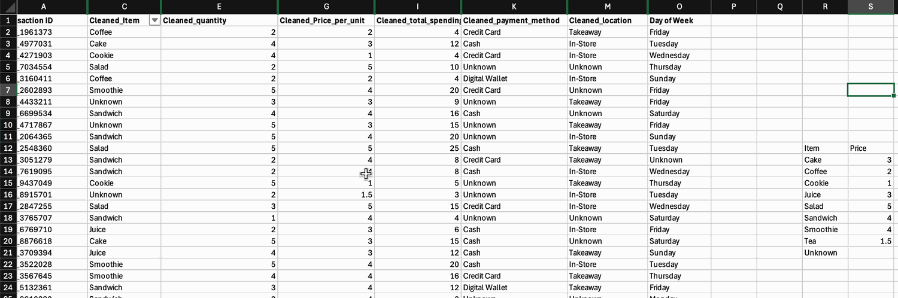
With clean data in hand, I moved to Power BI and compared in-store and takeaway sales by order size, item and day of the week, using total spent as the measure of performance.
Key insights
Bigger orders happen at the table
I started with the simplest question: does the size of an order depend on whether the customer stays? Small orders under $5 lean takeaway, while the largest orders, $15 and above, lean in-store. Sitting down seems to encourage customers to add more to their order, whether that's a side, a second drink or a full meal.
That raised the next question: which items are driving those bigger dine-in orders?
What people buy depends on where they are
Salad brings in the most revenue of any item, and more of it is sold in-store, along with sandwiches, smoothies and juice. Coffee, cake, tea and cookies tip the other way, with coffee showing the clearest takeaway lead, likely from students and workers grabbing a drink on the go. In other words, the dining room earns the more substantial, higher-priced items, while takeaway carries the quick ones.
Next, I checked whether this pattern holds across the week.
The week is close to even, with small swings
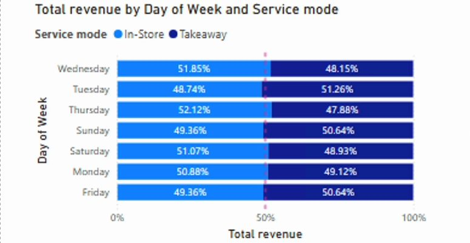
Revenue splits roughly 50/50 every day. Wednesday and Thursday lean slightly in-store, at about 52%, while Tuesday, Friday and Sunday lean slightly takeaway. The gap is small, so the day of the week matters more for staffing and seating plans than for the choice of operating model.
Plotting each item's average spend per order against how often it's bought confirms the story. The highest-spend point, at about $15 per order, is salad bought in-store, which is also one of the most frequent purchases. At the other end, cheap items like tea, at about $3 per order, still sell in high volume as takeaway. The space earns the high-value orders, and takeaway keeps the everyday volume coming, which points straight to a hybrid model.
Recommendation
Run a hybrid model: keep a physical space for the higher-value dine-in orders, and keep takeaway for quick, convenience-driven purchases like coffee. If the space shrinks, design it around the items that sell best in-store.
Limitations & equity
Every cleaning choice shapes the result. Recovering missing values assumed each item always sells at the same price, so promotions or size options would skew the numbers. With 40% of transactions missing a service mode, the in-store vs takeaway comparison rests on the remaining 60%. Looking only at revenue also leaves out the people who rely on the space: students who need somewhere to study, and older or disabled customers with limited access to delivery apps. Closing the dining room could also cut in-store jobs. A recommendation that makes financial sense still has to weigh who it leaves behind.
Nation's Restaurant News, “Restaurant Operators Shrink the Store, Not the Experience.” nrn.com
Restaurant365, “The Ghost Kitchen as a New Revenue Stream for Your Restaurant Group.” restaurant365.com
Ahmed Mohamed, “Cafe Sales – Dirty Data for Cleaning Training,” Kaggle dataset. kaggle.com
Simulated startup
PrepBuddy
PrepBuddy started with my own problem. When I moved off campus, I no longer had time to cook, but I still wanted to eat well. My options weren’t great. Eating out was expensive. The meal plan had limited options that never quite matched what I was craving, and the chicken was sometimes dry or a little undercooked.
What’s the healthy alternative to cooking and eating out for off-campus college students who aren’t on a meal plan?
PrepBuddy was our answer, a simulated startup I developed as part of Cornell’s entrepreneurship class. As CTO, I led the product end to end, from idea to features to UX/UI, and shaped the business model.
The first idea
Our first idea sent a “prep buddy” to a student’s kitchen to batch-cook their meals for the week. Students picked their meals, used their own groceries or had them delivered, and AI built the meal plan.
Book a session
Pick mealsAI builds the plan
Get groceriesyour own or delivered
A prepper cooksin your kitchen
Eat all week
Where it fits
Cooking yourself is cheap but takes time. Delivery apps are easy but expensive. PrepBuddy aimed for the empty space in between: affordable, convenient and healthy.
The market
About 19.5 million students attend U.S. colleges, and around 60% of them live off campus and cook for themselves. That’s roughly 11.7 million students. If 5% of them adopted PrepBuddy, it would reach about 585,000 users.
Why we pivoted
Two problems kept coming up. Having a stranger come into someone’s home raised safety concerns. Paying a person to cook in every kitchen also made each session expensive, which went against the whole point of being affordable.
→From meal prep to cook-along
The new idea
We kept the goal but changed the format. PrepBuddy became a global live cook-along marketplace. Students book a session with a guide anywhere in the world, filtering by cuisine, price and rating. Guides can be other students, home cooks or chefs. Before the session, students get a grocery list. During it, the guide walks them through the dish live, answers questions and adjusts to their tools and skill level. Afterward, AI turns the session into a personalized recipe card they can keep in their cookbook.
Browse & bookany guide, anywhere
Get your listgroceries before the session
Cook livethe guide adapts to you
Keep the recipean AI recipe card
The new format also opened up a bigger market. Beyond college students, it reaches the 29 million Gen Z and millennial home cooks who want better guidance. The business model followed: a 15–25% commission on each session, plus a $5–10 monthly subscription for the AI recipe library.
Competitors
Videos can’t answer your questions, cooking classes are expensive and need commitment, and written recipes skip the small details. PrepBuddy is the only option that’s live, personal and leaves you with a recipe you can reuse.
Live & personal
Global guides
AI recipe memory
Low friction
PrepBuddy
✓
✓
✓
✓
Cozymeal
~
~
✕
✕
Airbnb Experiences
✓
✓
✕
✕
MasterClass
✕
~
✕
✓
YouTube / TikTok
✕
~
✕
✓
Cooking schools
✓
✕
✕
✕
✓ fully supported · ~ partly · ✕ not supported
What’s next
Once we have enough data on what students cook and how they eat, the next step is a personalized AI nutritionist. It would act like a personal wellness consultant, planning your meals around your goals and taking care of you when it comes to food. It could live on your phone or even on your fridge.
Sun'sRecording
Pick a drink, press play.
Sun's Signatures
Tap the record to listen.
The Premiere1:56
written as end-credits music: the moment after the story resolves. built from a combination of sampling, reversed tracks and midi.
Millennium Bug1:32
inspired by the y2k scare around the year 2000. glitchy and chaotic.
Snow Globe Fizz0:24
a short, cosy christmas piece built with splice virtual instruments.
starry night / i enter / your mirror1:57
a sound piece based on a haiku. every sound was recorded on a zoom recorder.